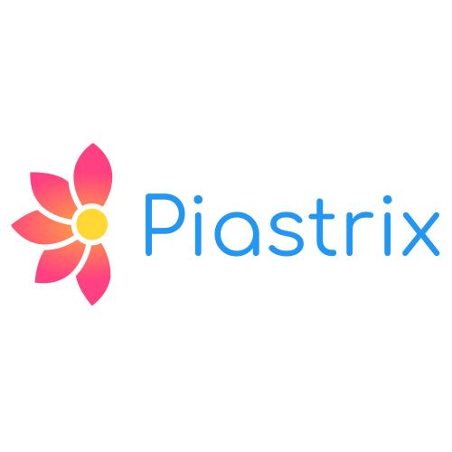
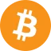
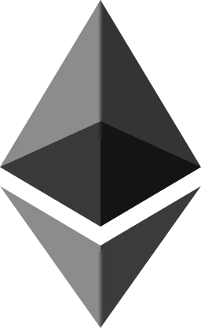

To'lovlar — bonus faollashtirish
Mahalliy kartalar va hamyonlar bilan birinchi depozit.

fairpari-casino-bonuses.com bonus katalogi — welcome, FS va sport aksiyalari.
Mahalliy kartalar va hamyonlar bilan birinchi depozit.
Minimal depozit/yechish — kassada tasdiqlanadi. Depozit ~130 000 UZS; yechish ~50 000 UZS dan.

| Usul | Min. depozit | Min. yechish | Depozit | Yechish | Komissiya | Izoh |
|---|---|---|---|---|---|---|
| Humo | 130 000 UZS | 50 000 UZS | Darhol | 1–24 soat | 0% | Mahalliy UZS karta |
| 130 000 UZS | 50 000 UZS | Darhol | 1–24 soat | 0% | Mahalliy UZS karta | |
| 130 000 UZS | 50 000 UZS | 1–5 min | 2–12 soat | 0% | Mobil hamyon | |
| 130 000 UZS | 50 000 UZS | 1–5 min | 2–12 soat | 0% | Mobil hamyon | |
| Piastrix | 150 000 UZS | 100 000 UZS | 5–15 min | 1–24 soat | 0–1% | Elektron hamyon |
| ~130 000 UZS | ~260 000 UZS | 10–30 min | 30–60 min | Tarmoq | ≈10 / ≈20 USD |
Bonus depoziti — milliy kartalar
| Usul | Depozit / yechish | Muddat |
|---|---|---|
| Humo / Uzcard | Depozit ~130k UZS dan | Depozit: daqiqalar; yechish: 1-3 kun |
| Click / Payme | UZS hamyon | Tez depozit; yechish usulga bog'liq |
| Piastrix / UZBOT | Onlayn kassa | Onlayn; KYC tezlashtiradi |
| Kripto (USDT va b.) | Tarmoq bo'yicha min. | Blokcheyn tezligiga qarab |
| KYC | Pasport + metod tasdiqi | Birinchi yechishda |
Depozit tezligi va shaffofligi muhim: FairPari mahalliy kartalar va hamyonlarni qo'llab-quvvatlaydi. Birinchi yechishda KYC so'ralishi mumkin; minimal depozit taxminan 130 000 UZS.




Bonus portali — Humo, Click, Payme va KYC
Bonus portali — O'zbekiston bank kartalari Humo va Uzcard orqali UZS depozit — eng keng tarqalgan usul. Kartani kiritishda 3D Secure tasdiqlash talab qilinishi mumkin.
Bonus portali — Minimal depozit taxminan 130 000 UZS. Maksimal limit kunlik va akkaunt statusiga bog'liq — KYC dan keyin oshishi mumkin.
| Ko'rsatkich | Tavsif |
|---|---|
| Humo kartalar | Mahalliy UZS karta — depozit darhol, yechish 1–24 soat |
| Uzcard kartalar | Bank kartasi — UZS hisobga to'g'ridan-to'g'ri o'tkazma |
| KYC keyin limit oshishi | Birinchi yechishda pasport/ID — odatda 30–60 daqiqa |
Bonus portali — Yechish kartaga qaytarish bir necha soatdan 24 soatgacha; bank ish vaqti ta'sir qiladi.
Bonus portali — Click va Payme — mobil to'lov ilovalari orqali tez depozit. Hisobni telefon raqami bilan bog'lash.
Bonus portali — Yechish ham shu hamyonga — akkaunt egasi mosligi KYC da tekshiriladi.
| Ko'rsatkich | Tavsif |
|---|---|
| Click | tez to'ldirish |
| Payme | mobil hamyon |
| Yechish | shu hamyon |
| Komissiya | shartlarni o'qing |
Bonus portali — Komissiya ko'p hollarda 0% platformadan; hamyon provayderi o'z tarifiga ega bo'lishi mumkin.
Bonus portali — Piastrix — xalqaro elektron hamyon; UZS va boshqa valyutalar. Kripto: USDT (TRC20/ERC20), Bitcoin, Ethereum — tarmoq tanlashda ehtiyot bo'ling.
Bonus portali — Kripto depozit tez; yechish tarmoq tasdig'ini kutadi. Noto'g'ri tarmoq — mablag' yo'qolishi xavfi.
Bonus portali — Kripto kursi volatil — UZS ekvivalenti depozit vaqtidagi kursda.
Bonus portali — Birinchi yechishdan oldin shaxsni tasdiqlash: pasport yoki ID skaneri, selfi, ba'zan manzil hujjati. Jarayon 15 daqiqadan 48 soatgacha.
Bonus portali — Hujjatlar aniq, rangli va amal qilish muddati ichida bo'lishi kerak. Boshqa shaxs kartasi — rad etiladi.
Bonus portali — Verifikatsiyadan keyin yechish limitlari oshadi; VIP tezroq qayta ishlanishi mumkin.

Bonus portali — Depozit: kartalar va hamyonlar odatda darhol; kripto — 1–3 tarmoq tasdiqi. Yechish: 15 daqiqa — 24 soat; KYC birinchi marta uzoqroq.
Bonus portali — Dam olish kunlari va bayramlar bank vaqtlarini cho'zishi mumkin. Qo'llab-quvvatlashda tiket ochib status so'rang.
| Ko'rsatkich | Tavsif |
|---|---|
| Depozit | ko'pincha darhol |
| Yechish | 15 min – 24 soat |
| KYC birinchi marta uzoqroq | Birinchi yechishda pasport/ID — odatda 30–60 daqiqa |
| Kripto | tarmoq tasdiqi |
| Tiket | status kuzatuv |
Bonus portali — SSL shifrlash; PCI DSS standartlari to'lov provayderlari darajasida. Hech qachon parol yoki SMS kodini «qo'llab-quvvatlash» ga bermang.
Bonus portali — Phishing saytlardan saqlaning — faqat rasmiy domen. Ikki faktorli autentifikatsiya yoqing.
Bonus portali — Nima uchun yechish kechikdi? — KYC, bank, noto'g'ri rekvizit. Minimal depozit? — ~130 000 UZS. Komissiya bormi? — Ko'pincha yo'q, shartlarni o'qing.
Bonus portali — Boshqa shaxs kartasidan depozit? — Rad etilishi yoki tekshiruv mumkin. Kripto tarmog'i xato? — Mablag' yo'qolishi xavfi.
| Ko'rsatkich | Tavsif |
|---|---|
| KYC kechikishi | Birinchi yechishda pasport/ID — odatda 30–60 daqiqa |
| Komissiya | shartlar |
Bonus portali — Faqat yo'qotishga tayyor mablag' bilan o'ynang. Depozit limiti va o'zini cheklash — akkaunt sozlamalarida.
Bonus portali — Qarzga o'ynash tavsiya etilmaydi. Oilaviy byudjetga ta'sir qilmasin.

Bonus portali — Humo — Milliy bank tizimi kartalari. Uzcard — boshqa emitentlar. Ikkalasi ham UZS.
Bonus portali — Ba'zi banklar onlayn qimor tranzaksiyalarini cheklashi mumkin — bank qo'llab-quvvatlashiga murojaat.
| Ko'rsatkich | Tavsif |
|---|---|
| Humo Milliy | Mahalliy UZS karta — depozit darhol, yechish 1–24 soat |
| Uzcard emitent | Bank kartasi — UZS hisobga to'g'ridan-to'g'ri o'tkazma |
Bonus portali — 3D Secure SMS kod — qo'shimcha xavfsizlik qatlami.
Bonus portali — KYC hali tugallanmagan; noto'g'ri rekvizit; bank ish vaqti; bonus wagering tugallanmagan; shubhali faoliyat tekshiruvi.
Bonus portali — Birinchi yechish eng uzoq — keyingilari tezroq. VIP prioritet.
| Ko'rsatkich | Tavsif |
|---|---|
| KYC tugallanmagan | Birinchi yechishda pasport/ID — odatda 30–60 daqiqa |
| Bonus wagering | Bonus aylanmasi — kazino ×35, sport ×5 |
Bonus portali — Tiket ochganda tranzaksiya ID va skrinshot yuboring.
Bonus portali — Faqat rasmiy manzil — saytdan nusxa oling. QR kod skanerlang.
Bonus portali — Tarmoq tanlash: USDT TRC20 arzon komissiya; ERC20 yuqori gas. Noto'g'ri tarmoq — mablag' yo'qoladi.
Bonus portali — Minimal depozit kriptoda USDT ekvivalentida.
Bonus portali — Standart akkaunt kunlik yechish limiti — promo qoidalarda. VIP limit oshadi.
Bonus portali — Depozit limiti mas'uliyatli o'yin uchun foydalanuvchi o'rnatadi — platforma limiti alohida.
Bonus portali — Katta yechish bo'lib-bo'lib to'lanishi mumkin.

Bonus portali — Karta chargeback qimor depozitida odatda o'yinchining foydasiga emas — akkaunt blok.
Bonus portali — Nizo hal qilish: qo'llab-quvvatlash tiketi, hujjatlar, 14–30 kun.
Bonus portali — Har doim o'z kartangizdan depozit — oila kartasi muammo.
Bonus portali — Depozit, yechish, Humo, Uzcard, Click, Payme, Piastrix, USDT, Bitcoin, KYC, verifikatsiya, tranzaksiya, komissiya, limit, 3D Secure, UZS to'lov, onlayn kazino to'lov.
Bonus portali — FairPari mahalliy va kripto usullarni birlashtirib O'zbekiston o'yinchilariga qulay to'lov ekotizimi beradi.
| Ko'rsatkich | Tavsif |
|---|---|
| KYC | Birinchi yechishda pasport/ID — odatda 30–60 daqiqa |
| Click Payme | Mobil hamyon — 1–5 daqiqada depozit |
Bonus portali — 1) Login. 2) Kassa / Depozit. 3) Usul tanlash (Humo, Click...). 4) Summa (min ~130 000). 5) Tasdiqlash (3D Secure). 6) Balans yangilanishi (odatda darhol).
Bonus portali — Birinchi depozitda welcome bonus tanlangan bo'lsa — PROMO da faollashtirishni unutmang.
Bonus portali — Tranzaksiya tarixida ID saqlang — muammo bo'lsa tiketga qo'shing.
Bonus portali — 1) KYC tugallang (pasport, selfi). 2) Wagering tugagan bo'lsa bonusdan. 3) Yechish bo'limi. 4) Summa va usul. 5) Tasdiqlash. 6) Kutish (15 min – 24 soat).
Bonus portali — Birinchi yechish eng uzoq — hujjatlar tayyor bo'lsin. Keyingilar tezroq.
| Ko'rsatkich | Tavsif |
|---|---|
| KYC birinchi | Birinchi yechishda pasport/ID — odatda 30–60 daqiqa |
| Wagering tugashi | Bonus aylanmasi — kazino ×35, sport ×5 |
Bonus portali — Minimal yechish summa va komissiya — kassa shartlarida.

Bonus portali — Depozit tushmadi — 15 daqiqa kuting, bank SMS, tranzaksiya ID bilan tiket. Yechish rad — KYC, wagering, noto'g'ri rekvizit tekshiring.
Bonus portali — Kripto noto'g'ri tarmoq — qaytarib bo'lmasligi mumkin; manzilni 3 marta tekshiring.
Bonus portali — Bank blok — boshqa usul yoki bank qo'llab-quvvatlash.
Bonus portali — Humo, Uzcard, Click, Payme, Piastrix, USDT, BTC, ETH — FairPari O'zbekiston o'yinchilariga keng tanlov. UZS asosiy valyuta.
Bonus portali — KYC va AML — xavfsizlik uchun majburiy. O'z kartangizdan depozit. 18+.
Bonus portali — To'lov ma'lumotlari PCI DSS sertifikatlangan shlyuz orqali o'tadi; FairPari to'liq karta raqamini serverda saqlamaydi. Tokenizatsiya — kartangiz keyingi depozitlar uchun xavfsiz bog'lanish (siz ruxsat bersangiz).
Bonus portali — 3D Secure — bank SMS yoki ilova tasdiqlash; bu firibgarlikdan himoya. Agar SMS kelmasa — bank qo'llab-quvvatlash, telefon raqam yangiligi.
Bonus portali — Kripto tranzaksiyalar blokcheynda ochiq — TX hash ni saqlang. USDT noto'g'ri manzilga yuborilgan mablag' qaytarilmaydi.
Bonus portali — Hech qachon qo'llab-quvvatlash «tekshiruv uchun» to'liq karta raqami yoki CVV so'ramaydi — bu fishing.
Bonus portali — Asosiy hisob UZS — depozit va stavka so'mda. Kripto depozit joriy kursda UZS ga aylanadi; kurs momenti depozit tasdiqlanganda belgilanadi.
Bonus portali — Yechish UZS da — kripto yechish (agar mavjud) alohida kurs va komissiya bilan.
Bonus portali — Bank konvertatsiyasi ba'zi xalqaro kartalarda qo'shimcha xarajat — mahalliy Humo/Uzcard ustun.
Bonus portali — Valyuta o'zgarishi ro'yxatda bir marta — keyin o'zgartirish yo'q.

Bonus portali — Kunlik depozit limiti mas'uliyatli o'yin uchun foydalanuvchi o'rnatadi — masalan 2 000 000 UZS/kun. Platforma maksimal depozit ham qo'yishi mumkin — VIP dan keyin oshadi.
Bonus portali — Minimal yechish — odatda 50 000–100 000 UZS atrofida; aniq raqam kassada. Maksimal yechish kunlik — akkaunt statusiga bog'liq.
Bonus portali — Katta yechish (10M+ UZS) bo'lib-bo'lib to'lanishi yoki qo'shimcha tekshiruv talab qilishi mumkin — AML.
Bonus portali — Limitlarni akkaunt sozlamalari va PROMO bo'limida tekshiring — VIP status limitni oshiradi.
Bonus portali — Minimal depozit? — Taxminan 130 000 UZS. Yechish qancha? — 15 daqiqadan 24 soatgacha, KYC dan keyin tezroq.
Bonus portali — Komissiya? — Ko'pincha yo'q; bank yoki hamyon o'z tarifiga ega bo'lishi mumkin.
| Ko'rsatkich | Tavsif |
|---|---|
| USDT tarmoq | TRC20 tarmog'i — kripto depozit va tez yechish |
| KYC pasport | Birinchi yechishda pasport/ID — odatda 30–60 daqiqa |
Bonus portali — Boshqa karta? — Rad etilishi mumkin; faqat o'z kartangiz. Kripto tarmoq? — To'g'ri tanlang, TRC20 USDT tez.
Bonus portali — KYC hujjatlar? — Pasport/ID, selfi; aniq va rangli skaner.
Bonus portali — Tranzaksiya tarixi akkauntda — sana, summa, status. «Kutilmoqda» — bank yoki tarmoq tasdiqlayapti.
Bonus portali — Rad etilgan yechish — sabab xabarda: wagering, KYC, limit. Qo'llab-quvvatlashga ID bilan murojaat.
Bonus portali — Katta summa oldindan rejalashtiring — KYC va limit tekshiruvi.
Bonus portali — SMS bank va ilova push — tranzaksiya tasdig'i.
Bonus portali — SSL qulf brauzerda. Rasmiy domen. 2FA yoqing. Phishing email tekshiring.
Bonus portali — Hech kimga CVV va SMS kod bermang. Umumiy Wi‑Fi da ehtiyot.
Bonus portali — Kripto manzilni 3 marta tekshiring. TX hash saqlang.
Bonus portali — Depozit limiti o'rnating mas'uliyatli o'yin uchun.

Bonus portali — Humo va Uzcard onlayn to'lovlarni qo'llab-quvvatlaydi; ba'zi banklar kazino MCC kodini cheklashi mumkin — bankka qo'ng'iroq qiling yoki Click/Payme orqali aylantring.
Bonus portali — 3D Secure SMS ba'zida kechikadi — 2 daqiqa kuting, qayta urinmang darhol (ikki marta yechilish xavfi yo'q, lekin chalkashlik).
Bonus portali — Karta muddatini tekshiring — muddati o'tgan karta rad etiladi. Virtual karta ba'zi banklarda onlayn to'lov uchun alohida ochiladi.
Bonus portali — Yechish kartaga — depozit qilgan kartaga qaytish tamoyili; boshqa karta rad.
Bonus portali — Kripto depozit tez va chegaradan mustaqil; lekin kurs xavfi bor. Fiat UZS barqarorroq byudjet uchun.
Bonus portali — USDT TRC20 komissiya arzon — ERC20 qimmat. Manzil nusxalashda birinchi va oxirgi 4 belgini tekshiring.
Bonus portali — Yechish kriptoga (agar mavjud) alohida KYC va limit — shartlarni o'qing.
Bonus portali — Aralash: kundalik o'yin UZS, katta depozit kripto — shaxsiy tanlov, riskni tushunib.
Bonus portali — Ushbu qo'llanma FairPari platformasi bo'yicha tekshirilgan faktlar va amaliy tavsiyalarni jamlaydi. Raqamlar va shartlar 2026-yil iyun holatiga mos; har doim akkauntingizdagi PROMO bo'limini tekshiring — aksiyalar tez o'zgarishi mumkin.
Bonus portali — O'zbekiston o'yinchilari uchun UZS hisob, Humo, Uzcard, Click, Payme va kripto tanlovi katta qulaylik. Mobil APK va iOS PWA orqali istalgan vaqtda kirish mumkin.
Bonus portali — Promo kod fa_1635, welcome bonuslar, wagering qoidalari va KYC jarayoni oldindan rejalashtirilsa — tajriba silliqroq bo'ladi.
Bonus portali — 18+ mas'uliyat bilan o'ynang; depozit limiti va o'zini cheklash vositalaridan foydalaning. Savollar bo'lsa — qo'llab-quvvatlash chat 24/7.
Bonus portali — Depozit oldin: minimal summa, to'g'ri usul, 3D Secure tayyor, o'z karta. Yechish oldin: KYC tugallangan, wagering tugagan, to'g'ri rekvizit, limit tekshiruv.
Bonus portali — Har tranzaksiyada ID saqlang. Muammo — tiket + skrinshot. Kripto — tarmoq va manzil 3x tekshir.
Bonus portali — Mas'uliyatli moliyaviy boshqaruv: depozit limiti, yo'qotishga tayyor summa, qarzga emas.
Bonus portali — FairPari to'lovlari O'zbekiston o'yinchilari uchun Humo, Uzcard, Click, Payme, Piastrix, USDT, BTC, ETH bilan qulay.
© 2026 fairpari-casino-bonuses.com — bonus portali. 18+.